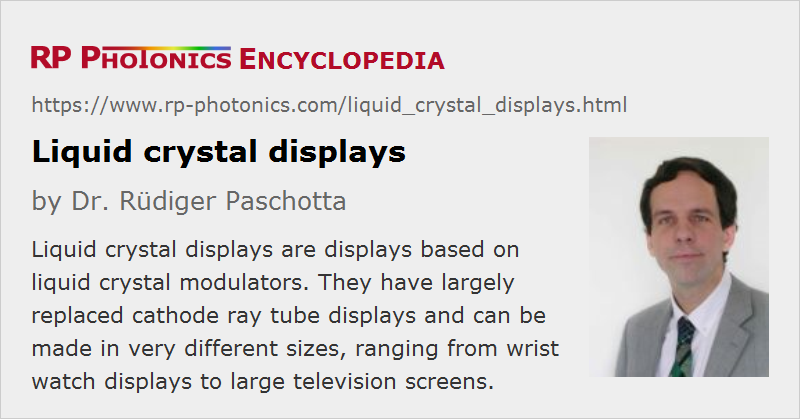

Liquid Crystal Displays
Acronym: LCD
Definition: displays based on liquid crystal modulators
More general term: displays
German: Flüssigkristall-Anzeigen
Categories: photonic devices, vision, displays and imaging
How to cite the article; suggest additional literature
Author: Dr. Rüdiger Paschotta
Liquid crystal displays (LD displays or LCD) are displays based on liquid crystal modulators. They are often produced in huge volumes and are technologically optimized to a high degree.
The previously used displays based on cathode ray tubes (CRTs) have been nearly completely replaced with LC displays, which have a wide range of advantages:
- much lower power consumption
- no requirement for high voltages
- much more compact and lightweight setup
- no flicker (with suitable backlight)
- no burn-in of fixed images (but some degree of image persistence)
- no generation of X-ray radiation and nearly no potentially harmful other types of electromagnetic radiation (e.g. AC magnetic fields)
- realizable in a wide range of sizes, from millimeters to several meters
- lower production cost
Therefore, a large part of all currently used displays, from tiny watch displays to computer screen and television sets, are LC displays. However, LC displays compete with other technologies such as OLED and from tiny watch displays to large screen television. Also note that while LC displays are relatively environmentally friendly concerning power consumption, their production can be quite harmful for the climate, since it may involve gasses like SF6 and NF3 with a high greenhouse potential, which are often released to the atmosphere.
Typical Structure
Typically, a liquid display comprises the following components:
- The core element is a two-dimensional array of liquid crystal cells. They act as individually addressable phase modulators.
- There is an optical polarizer on each side.
- The backside can either contain some kind of reflector (mirror) for a passive display or a backlight for an active (illuminated) display.
- There is also usually a protective layer, e.g. a glass plate, on top. One may also integrate sensor components for realizing a touch screen.
The input polarizer (on the side of the backlight) may be of reflective type, which allows a kind of “recycling” of the light in the wrong polarization direction: it is sent back to the light source and will at least partly return with the usable polarization direction.
Displays with Tailored Segments
Simple types for monochrome displays are used for devices like wrist watches, alarm clocks, thermometers, pocket calculators and various status displays. Here, one often uses a moderate number of separate modulators, each one for one segment of a display. For example, a digit is typically constructed from seven segments, while alphanumerical displays need some more for displaying a wider range of characters. Segments of other forms can be easily made, e.g. for displaying fixed letter sequences, scales, arrows or other symbols. Such displays are not only simple to fabricate, but also simplify the use; one can easily activate the display of a certain symbol by providing a single electrical signal.
Matrix Displays
More flexibility of image control is obtained with a regular grid of display pixels. The pixels are arranged in rows and columns and addressed through their row and column numbers. Different types of passive and active matrices have been developed for addressing pixels. Nowadays, one mostly uses active matrix displays, which can contain several thin-film transistors (TFTs) per pixel, fabricated on the glass substrate. Such displays are suitable for digital photo cameras and camcorders, smart phones, tablets, computer screens and television devices; they can be made with very different screen diagonals between a few centimeters and several meters.
Passive Displays and Active Displays with Backlight
Some LC displays utilize ambient light; they will typically have some kind of mirror on the back side. They can have a very low power consumption, because driving the LC cells requires little power. The obvious disadvantage is that such displays can be used only with sufficiently intense ambient light.
Therefore, many displays are equipped with a backlight, which can be realized with different light sources:
- Particularly larger displays, e.g. computer monitors, used cold cathode fluorescence lamps (CCFL) in the past.
- Nowadays, it has become quite common to use white light emitting diodes (LEDs), which are a more compact and power-efficient solution. They are often arranged around the edges of the display, injecting light into a thin sheet from which it is extracted by scattering.
- Alternatively, one may cover the full display area with white LEDs, i.e., with a large LED array. That approach is mostly used for larger screens and has the advantage that one can dim parts of the backlight which display darker areas; that cannot only save electrical power but also increase the image contrast.
- It is also possible to use an RGB LED array for achieving better color rendering through a wider color gamut.
Some level of dynamic backlight control is also possible with LEDs at the edges, but the required light power is then determined by the brightest point in the image. Therefore, the power efficiency and contrast are clearly better for local dimming, where small image areas are treated separately.
Image Projectors
Liquid crystal devices are also used in some image projectors. Here, a typically quite intense light source – for example, a halogen lamp or a metal vapor lamp, sometimes an LED light source – is used, and additional projection optics produce a large image on some kind of screen. In order to reduce the heat load on the LC modulator array, one typically uses either a cold mirror or a hot mirror between light source and LC panel.
See below for remarks on liquid crystal on silicon technology, which is often used for projectors.
Color Displays
Color displays are typically realized by using three different modulators for each pixel, being responsible for red, green and blue color content, respectively. One requires additional optical filters for those, which unfortunately lead to a substantially reduced light transmission. Typically, only a few percent of the generated light can be transmitted through such a display even for a completely white image. The improvement of light transmission is of high importance particularly for mobile devices, where the power consumption of the illumination is a critical parameter.
Operation without a backlight is usually not feasible for color displays.
Display Panel Types
Liquid crystal displays can be realized with different panel technologies. The most important ones are explained in the following.
TN Panels
TN means twisted nematic. Here, one uses a nematic type of liquid crystal material, which is twisted in the zero-voltage state, because it is placed between two glass plates which are prepared with brushed polyimide coatings, leading to a preferred orientation of the liquid crystal molecules; the orientations for the two glass plates are mutually perpendicular. The polarization of incident light is initially aligned with the molecules, and is “dragged” along according to the continuously rotating molecule orientation. Therefore, the light can mostly pass the crossed polarizers, and the display may look light gray (or possibly have some other color, depending on the backlight). The polarization rotation can then be suppressed by applying a voltage to transparent electrodes made on the two glass plates (normally made of indium tin oxide = ITO), which pulls the molecules towards a state where they are basically oriented perpendicular to the glass surfaces. The transmission through the crossed polarizers is reduced accordingly. Such displays (with darker appearance of displayed characters) are called character negative; one can of course also make character positive displays.
There are various modified variants, e.g. super-twisted nematic (STN) or double super-twisted nematic (DSTN) panels, involving higher twist angles such as 180° or 270° for improved suitability for passive matrix pixel addressing.
TN panels are very common for a wide range of displays, including many computer screens and television sets. A potential disadvantage is that the optimum display contrast and color rendering is achieved only for a quite limited range of viewing directions.
IPS Panels: In-plane Switching
A modified kind of panel is based on in-plane switching (IPS). Here, the electrodes are not simply applied to the opposite glass plates; instead, one uses structured electrodes on one glass plate only, so that electric fields can be generated which are more or less along the glass surface rather than perpendicular to it. Typically, the liquid crystal cell is still of twisted nematic type; only the manner in which the applied electric field destroys the twisted configuration is different. Also, one may use polarizers which are oriented in the same direction, rather than crossed polarizers. The transmission is then originally very low and decreases with the application of the electric field.
There are various modified types of IPS panels (e.g. called super IPS, advanced super IPS, horizontal IPS or advanced high performance IPS) for optimizing various properties, such as the amount of light transmission and the range of viewing angles. The most important advantage of IPS modulators over TN modulators is that a high image contrast can be achieved in a substantially wider range of viewing directions.
VA Panels
There are panels with liquid crystal materials where the molecules naturally align in a direction perpendicular to the glass substrate (VA = vertical alignment). There is then no birefringence in the zero-voltage state, and crossed polarizers lead to a dark screen. One can then also apply in-plane switching to get the molecules into a tilted position, where birefringence is created and the transmission through the output polarizer increases.
Such panels can offer improved image contrast in combination with wide viewing angles and reduce temperature sensitivity.
Modified Designs
Various manufacturers have developed modified panel designs, which can be variants of TN or IPS panels or different designs. They typically achieve improved performance in some respect – for example image contrast, speed of response or angular viewing range – while having disadvantages in other aspects. Therefore, the choice of panel usually depends on a trade-off between different aspects, which depends on the particular application. The cost of the panels and related equipment may also differ between those technologies.
There is also the technology of liquid crystal on silicon (LCoS). Here, a typically quite small two-dimensional array of liquid crystal modulators is fabricated on a silicon backplane, which in addition to the modulators contains CMOS electronics for controlling the pixels. Between the electronics and the liquid crystal modulators, there is a reflective layer; such devices need to be used in reflection. They are suitable for projection displays, where the projected image area is typically far larger than the active chip area. Three different LCoS chips may be used for red, green and blue color components (three-panel design). There are also single-panel LCoS color displays, e.g. for use in miniature projectors (pico-projectors) where there is no space for additional color separation optics. Other applications are wearable computing (e.g. head-mounted displays) and electronic viewfinders. Partly, such micro-display panels contain ferroelectric liquid crystals, which are faster than other types of liquid crystal materials.
Performance Specifications of Liquid Crystal Displays
The following performance figures of modulators can be particularly relevant for applications:
Image Resolution
For a given image format, this is determined by the number of pixels – for example, 1024 × 768 pixels, 1920 × 1080 (full HD resolution), 3840 × 2160 (4K monitor) or 4096 × 2160 (4K cinema). The dot spacing is normally quantified in dots per inch (dpi) – for example, that is normally of the order of 100 dpi for computer screens, but far higher in some cases. 100 dpi implies a dot spacing of 25.4 mm / 100 = 0.254 mm. The size of the actually light-emitting dots may be smaller, particularly for color displays, containing red, green and blue emitting elements.
While displays with a large number of pixels (well over 1000 in one direction) were very expensive in the early times, they have become much more affordable. Even small displays as those for smartphones can now be made with very high resolution, i.e., with very small pixels.
Maximum Transmission and Image Brightness
The maximum transmission of the modulators is important for achieving high image brightness with limited illumination power. Of course, the image brightness also depends on the total optical power of the backlight and on the efficiency of light collection. Generally, LEDs are substantially more efficient than fluorescent lamps – mostly not due to the efficiency of light generation, but due to the more directional emission, which facilitates efficient light collection. Still, the typical maximum transmission of a color display, even when made with LED backlight, is only a few percent even for a white image.
The required image brightness depends very much on the application, of course. For example, devices for outdoor use require substantially higher image brightness, and that should be automatically adjusted corresponding to the intensity of ambient light.
Image Contrast
Modulators have a limited contrast, so that perfectly black parts of an image cannot be produced. Different panel technologies can substantially differ in terms of contrast. Some of them use a locally dimmed backlight for substantially improving the contrast, which may at the same time reduce the power consumption.
Homogeneity of Backlight
Ideally, the backlight is implemented such that the screen is very uniformly illuminated. In practice, however, one may have substantial variations of brightness over the screen area – particularly in cheap large displays.
Viewing Angle
The optimum image quality is usually achieved for a viewing direction which is roughly perpendicular to the screen surface. For viewing more from the side, the image quality will usually degrade sooner or later – with losses of contrast and/or deviations in color. Typical screens with TN panel have a quite limited viewing angle, which is particularly problematic when multiple people sit in front of a screen. IPS and VA panels can offer far wider viewing angles.
Update Speed (Frame Rate)
The switching speed is limited by the time required by the liquid crystal molecules for changing their orientation. Such processes are relatively slow, typically requiring a few milliseconds. For most purposes, for example for computer screens, they are fast enough. A typical frame rate (= rate of image updates) of a computer screen, for example, is 50 Hz or 60 Hz. For some applications, a higher frame rate like 100 Hz is preferable, but this will have a strong impact only if a video signal with that rate is available; only interpolating a lower-frequency video signal will not help much. Also note that the combination of high image resolution and high frame rate can lead to very high data rates, which can be transmitted only with the most modern digital interfaces.
For some specific applications, e.g. gaming monitors, one needs to optimize the speed, for example by realizing quite thin liquid crystal cells, using materials with low viscosity or applying overdrive signals.
Color Rendering
For color rendering, the spectral properties of the backlight and the used filters are relevant. Particularly when using a broadband light source, there is often a trade-off between color rendering and efficiency of the display, which affects the maximum image brightness and the power consumption. Therefore, LC displays are typically inferior to OLED displays, for example, in terms of color rendering. However, panels with rather good color rendering (and tentatively lower power efficiency) are available.
Note that a wide color gamut alone does not at all guarantee a realistic color rendering. For that, a screen also needs to be properly adjusted. For color-critical applications, it is necessary to calibrate screens with special measurement devices; the RGB intensity values are then readjusted to produce optimally realistic color impressions. The underlying technology including concepts like color profiles is unfortunately not easy to understand and correctly apply.
See also the article on the concept of the color rendering index.
Power Consumption
A specific advantage of liquid crystal modulators e.g. for passive displays is their quite low power consumption. In active displays, however, power consumption is dominated by the backlight, and that depends on the maximum transmission of the modulators. Despite the typically quite low light transmission efficiency, the power consumption of a typical LC display is several times lower than that of a similarly large CRT display. Further technological advances are expected. However, the trend for using larger and larger screens (e.g. for television) can offset the technological advances, so that power consumption even increases.
For computer screens used in offices, larger displays may even improve power efficiency if they can substantially improve the productivity, e.g. by displaying several relevant documents at the same time. That reduces the amount of working time for a given task, and thus the time of operation not only of the monitor, but also of the computer, room lighting, heating etc.
Further Aspects
Various further aspects can be relevant, depending on the application. For example, it can be disturbing that some LC displays exhibit substantial image distortions when being touched; this should be avoided particularly for touch screen displays. An input lag, i.e., a certain delay between video signal and actually displayed images, may affect the synchronization of images and sound. Further, the temperature range in which a display can properly work, e.g. without losing contrast and brightness, is more or less limited, depending on the panel technology. The limited lifetime may also be of interest.
Another important aspect for displays is the number of defect pixels (dead pixels); some limited number of defect pixels is often tolerated, at least in cheaper displays. Display technologies involving sophisticated and delicate processing steps for reaching high performance may produce higher rates of defect pixels. Note that there is an ISO standard concerning the number of allowed dead pixels in certain display categories, which however is not fully observed by all LCD manufacturers. Some manufacturers give a zero-defective-pixel guarantee.
Comparison with Other Technologies
LED, Including OLED
There are displays where light emitting diodes (LEDs) are used not just as a backlight for an LC display, but for directly generating the image information. Here, there is one LED per color (e.g. red, green blue) and pixel. This technology can be implemented with conventional LEDs for quite large outdoor displays, for example, or with micro-LEDs, often made as organic LEDs (OLED).
OLED displays can work with lower power consumption, as more of the generated light is usable; that is particularly relevant for portable devices, which need to be battery-powered. In addition, OLED displays typically offer better color rendering, although substantial improvements in that respect have also been made with LC displays. Further, they can work with much higher speed, offer a wider range of viewing angles and can be made thinner and less heavy.
Disadvantages of OLED displays are their substantially higher fabrication cost (particularly for large sizes) and the limited lifetime; the brightness of individual pixels degrades relatively rapidly during operation due to aging of the phosphors, and this to a different degree for the different colors. A related problem is the tendency of image burn-in, if a fixed image is displayed for a longer time.
Digital Micromirror Devices
Projection displays can also be made with digital micromirror devices (DMD), which are micro-opto-electromechanical systems (MOEMS). Such a device can contain hundreds of thousands of micro-mirrors which can be individually actuated, i.e., rotated by some angle of the order of 10°, using electrostatic forces. Three such micro-mirror devices could be used for realizing a color displays.
DMD displays are much more limited in terms of resolution, compared with LC displays. Also, it is normally preferable to realize a color display with a single chip. On the other hand, the higher efficiency of light use could be a substantial advantage.
Questions and Comments from Users
Here you can submit questions and comments. As far as they get accepted by the author, they will appear above this paragraph together with the author’s answer. The author will decide on acceptance based on certain criteria. Essentially, the issue must be of sufficiently broad interest.
Please do not enter personal data here; we would otherwise delete it soon. (See also our privacy declaration.) If you wish to receive personal feedback or consultancy from the author, please contact him e.g. via e-mail.
By submitting the information, you give your consent to the potential publication of your inputs on our website according to our rules. (If you later retract your consent, we will delete those inputs.) As your inputs are first reviewed by the author, they may be published with some delay.
See also: liquid crystal modulators
and other articles in the categories photonic devices, vision, displays and imaging
|  |
If you like this page, please share the link with your friends and colleagues, e.g. via social media:
These sharing buttons are implemented in a privacy-friendly way!